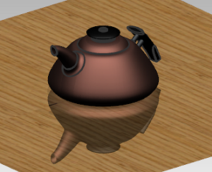
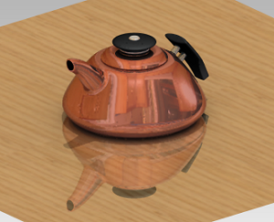

Change the reflection map
-
In the Scene Editor dialog box, on the Global Illumination tab, from the Image Type list, select Lighting Image Only.

Notice that the global illumination is affecting only the wood image and the teapot is left unilluminated.
-
On the Reflection tab, set the following:
-
Reflection Map = User Specified Image
-
Choose Image File
 = des07_kitchen.tif (from the parts directory)
= des07_kitchen.tif (from the parts directory)
Note
If you do not see any tiff images, make sure you are filtering the list for .tif images.
-
-
Leave the Scene Editor dialog box open.
-
On the Visualize Shape toolbar, click Start Shade
 .
.

Note the reflection map on the teapot.
-
Click Erase Shade
 after examination.
after examination.